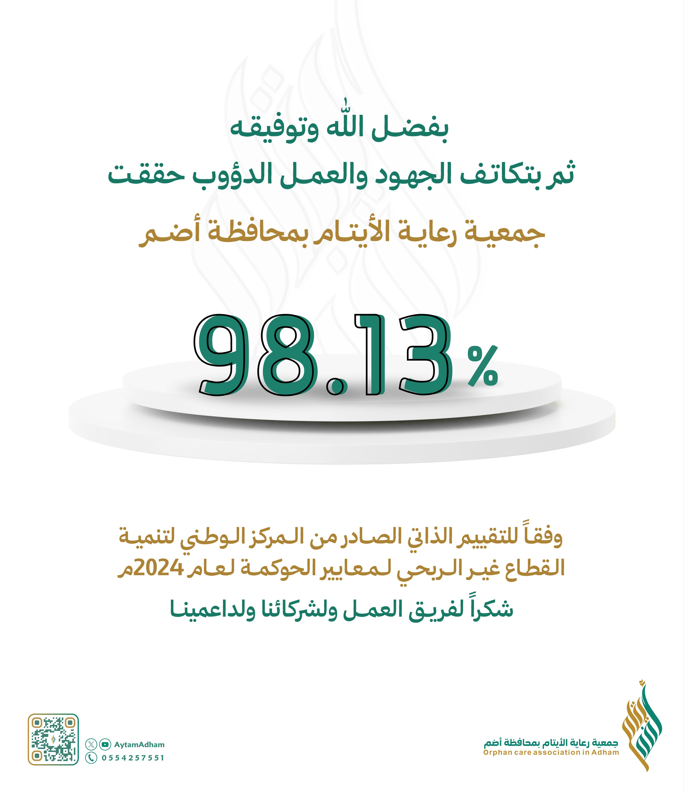
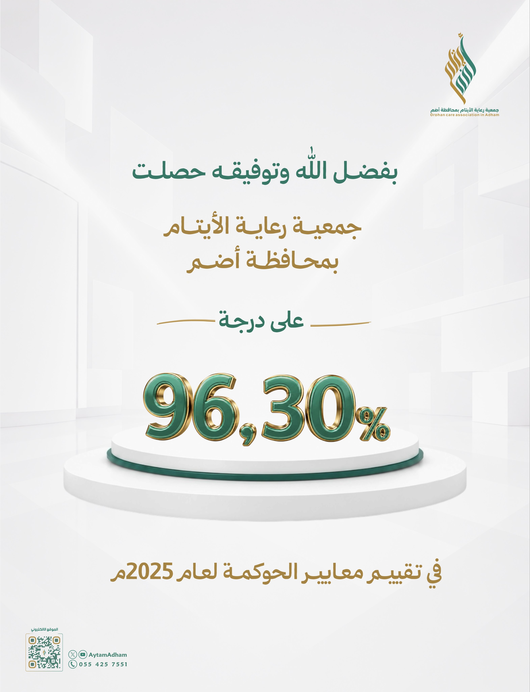
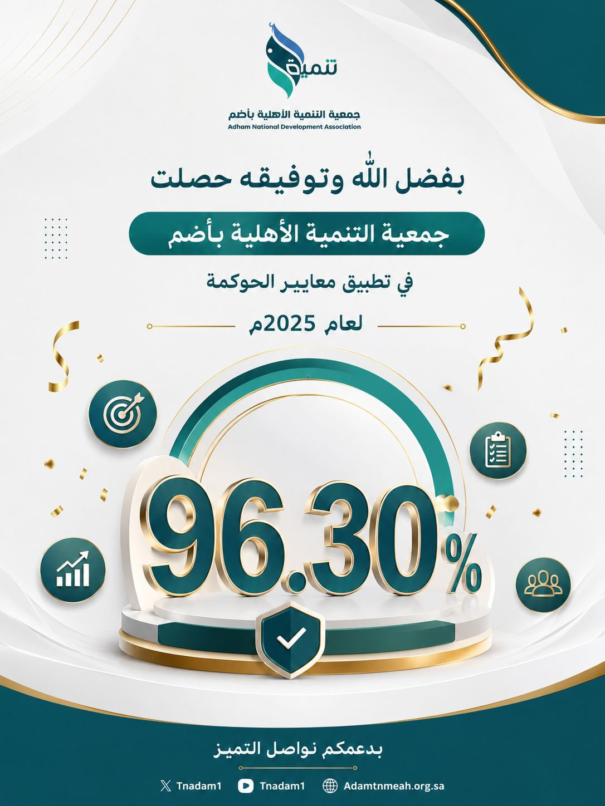
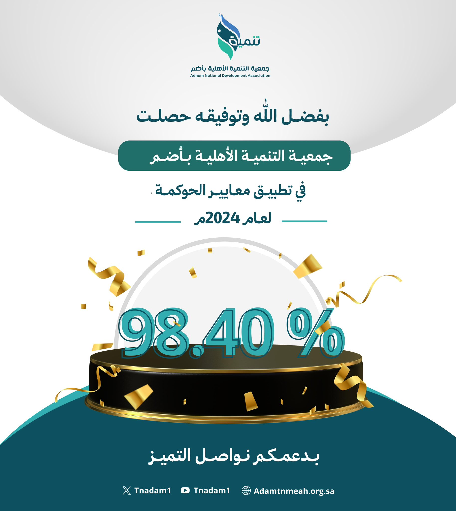
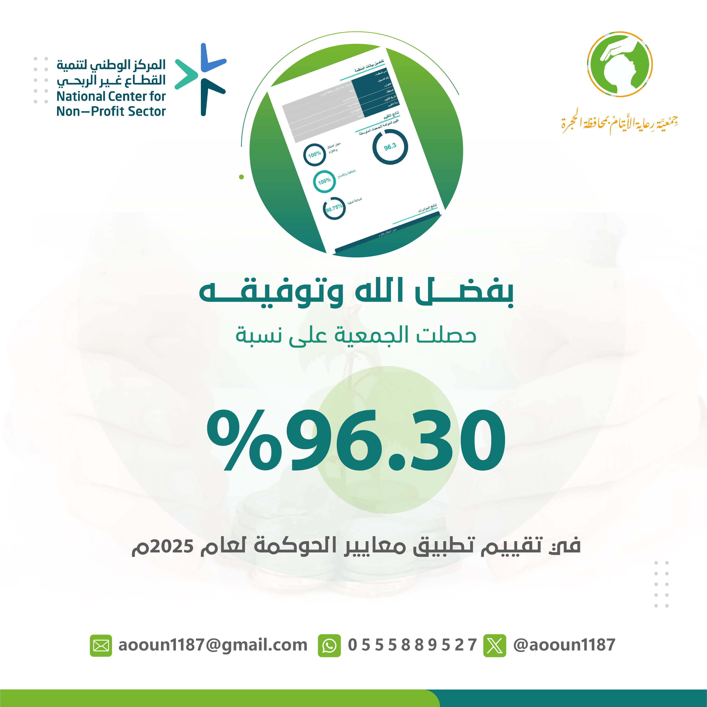
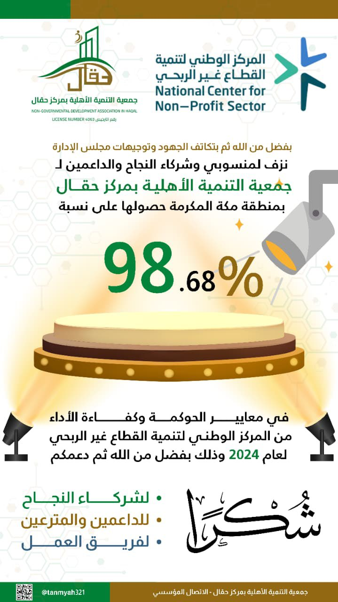
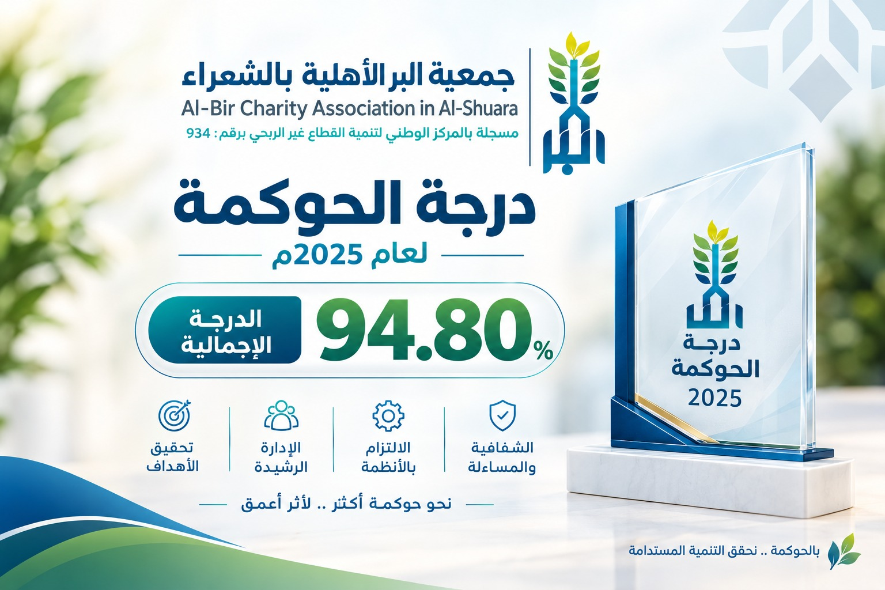
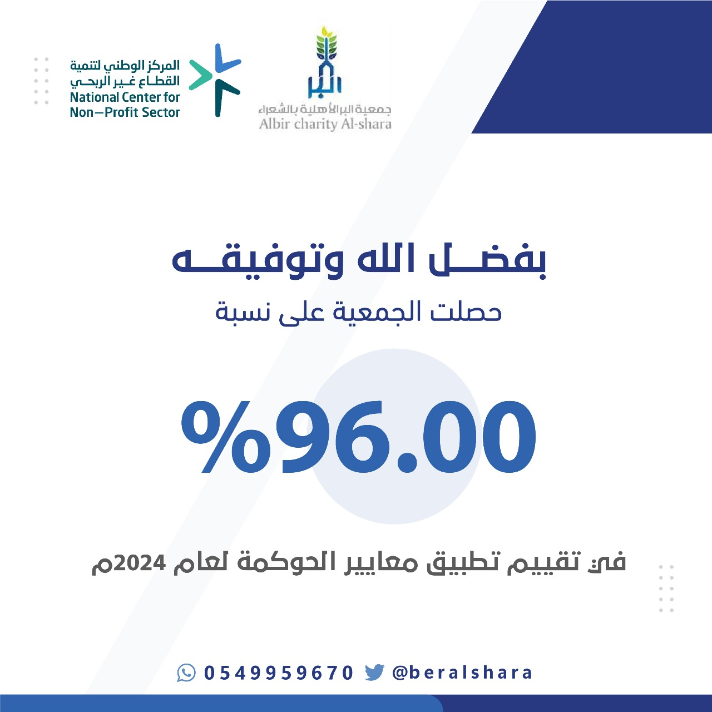
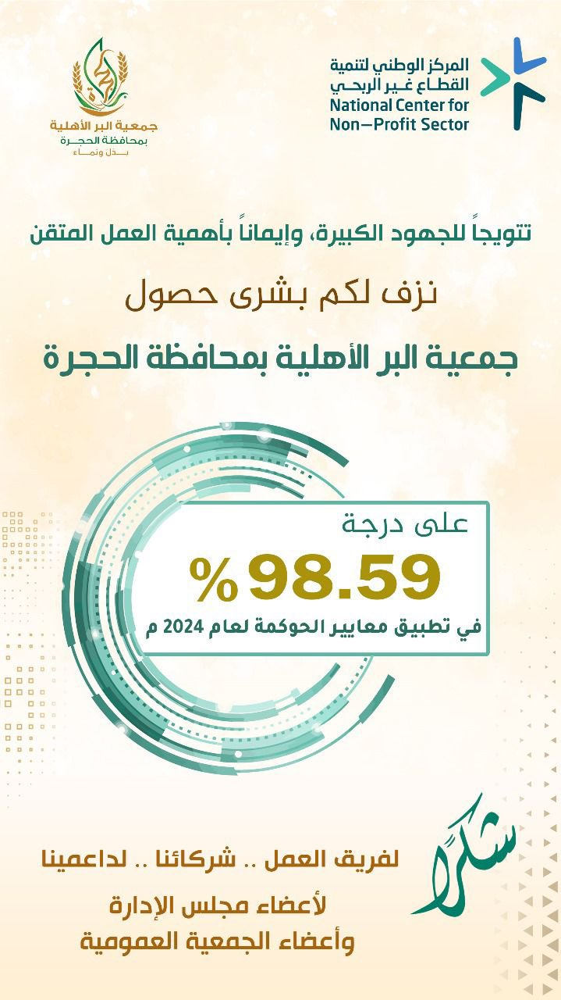

معرض الإنجازات / 2024 — 2025لكل نتيجة،
لكل نتيجة،
قصة عمل.
12 / صورة
محطات نعتز بها في رحلة الحوكمة.
تصفّح النتائج، واقترب من تفاصيل كل إنجاز.
في الواجهةجمعية البر
جمعية البر
الخيرية بحقال
100%
درجة التميّز في تطبيق معايير الحوكمة لعام 2025
شاهد الإنجاز كاملًا


جمعية رعاية الأيتام بمحافظة أضم


جمعية التنمية الأهلية بأضم


جمعية التنمية الأهلية بأضم


جمعية رعاية الأيتام بمحافظة الحجرة
جمعية البر الخيرية بحقال


جمعية التنمية الأهلية بمركز حقال

جمعية الجرين الأهلية بمركز الجرين


جمعية البر الأهلية بالشعراء


جمعية البر الأهلية بالشعراء


جمعية البر الأهلية بمحافظة الحجرة